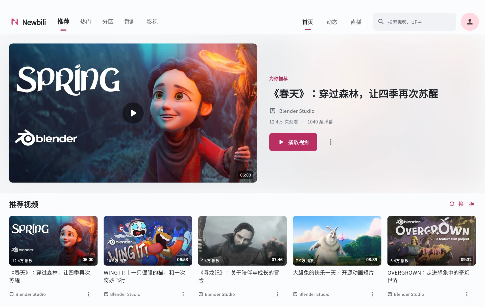
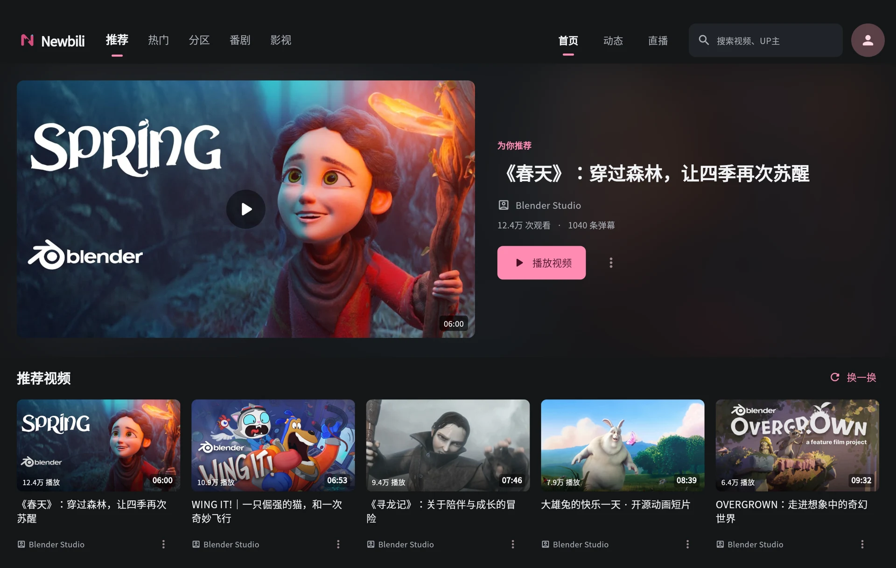
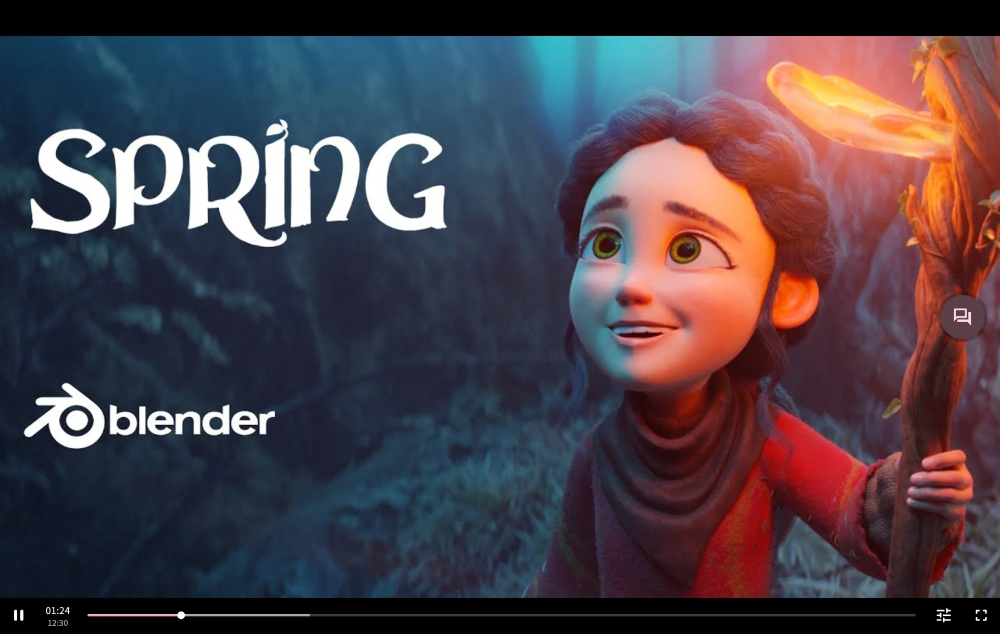
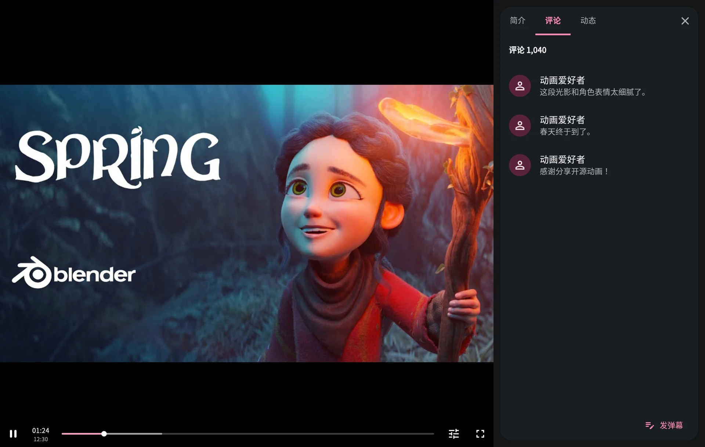
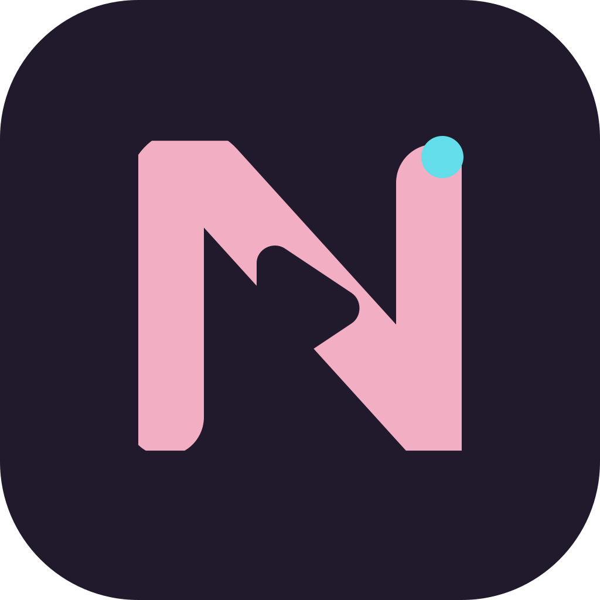

A NEW CHAPTER. IN MATERIAL.
从喜欢，
到沉浸。
让每一次点开，都顺理成章。
你的 Bilibili，现在有了更自在的模样。
开源 · Material Design · 为手机与大屏而设计
一眼喜欢。一触即达。01 / HOME

CONTENT TAKES CENTER STAGE.向下滚动 ↓
熟悉的内容，全新的手感
好看的界面，
也应该用起来舒服。
从封面进入视频，从观看展开评论。
页面之间有来处，也有归处。
每一个小动作，都接得上你的下一步。
MADE TO FLOW
01 / 发现一眼心动，
一眼心动，
顺势点开。
熟悉的推荐、分区和关注动态。
有层次的排版，让内容自然浮现。
02 / 沉浸让画面，
让画面，
接住视线。
从封面到播放，保持视觉的连续。
紧凑的播放控制，为画面留出空间。
03 / 交流想说的话，
想说的话，
就在旁边。
轻点入口，内容卡片从侧面展开。
简介、评论、动态，切换时视频继续。



顺着滚动，慢慢展开
SAME SOUL. MORE ROOM.
换一种尺寸，
还是那个手感。
拿在手里，刚刚好。
摊开大屏，更从容。
根据窗口重新布局，内容各就其位。
01
为窗口而变
手机、平板与分屏窗口，使用同一套设计语言。
02
给折叠留位置
识别铰链与半折姿态，安排视频和内容面板。
03
动静都有分寸
按压、切换、展开都有回应，也尊重减少动态效果设置。

OPEN, BY DESIGN.
一起，把它做得更好。
Newbili MD 已成为独立项目。代码、问题与改进，
都在公开的仓库里继续生长。
YOUR NEXT PLAY STARTS HERE.
现在，换个心情看。
给喜欢的内容，一个舒服的位置。
还有一些，你可能想知道。
这是 Bilibili 官方客户端吗？+
不是。Newbili MD 是独立的开源第三方客户端，与哔哩哔哩官方没有隶属关系。请遵守平台规则和内容版权要求。
和原来的 Newbili 有什么关系？+
MD 版从 Newbili 的 Android 分支独立而来，保留提交历史和已有功能，继续打磨 Material Design 界面。原项目仍然保留。
iOS 版本可以下载了吗？+
暂未提供。项目当前优先完善 Android 和官网，iOS / iPadOS 迁移暂缓；后续进展会记录在更新日志中。